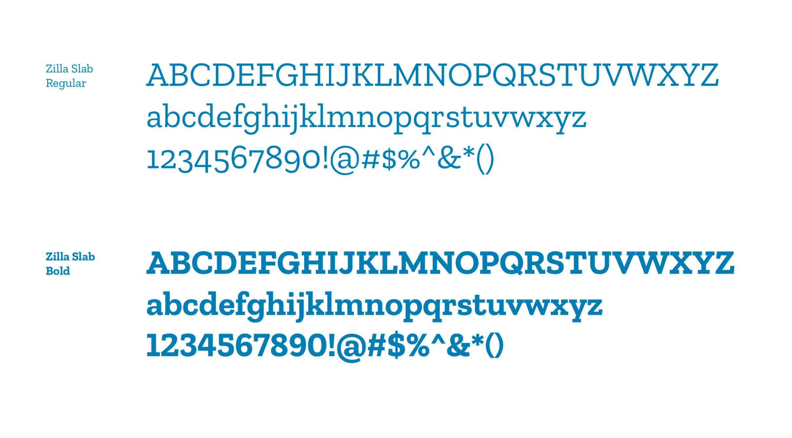
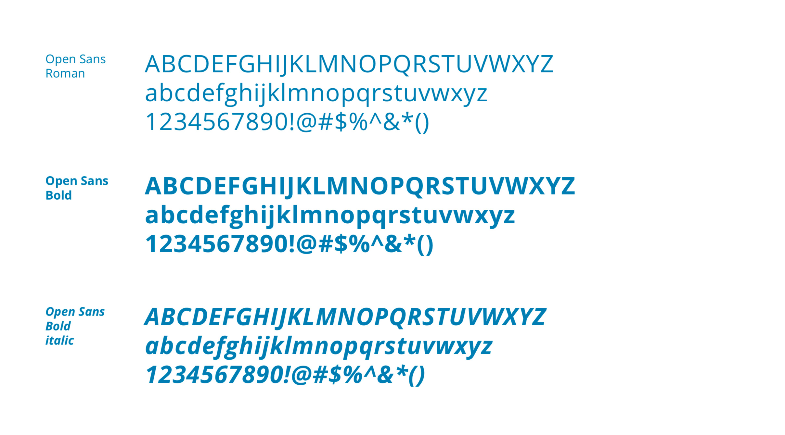
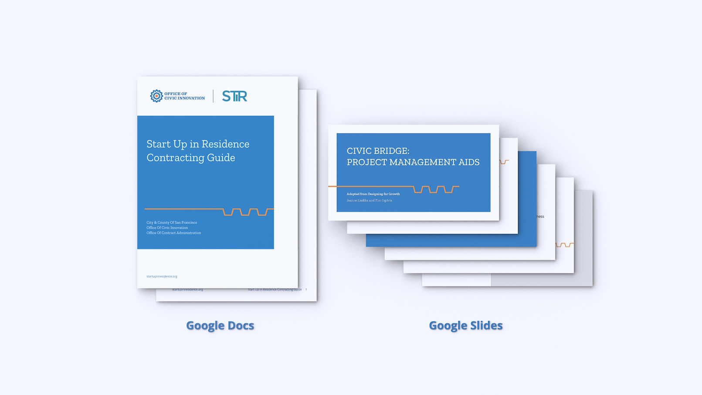

Office of Civic Innovation
Branding / Applications
Overview
I was a lead designer to develop an identity system for San Francisco’s Office of Civic Innovation to help with their visibility and further their mission. Office of Civic Innovation at TBD*.
San Francisco’s Office of Civic Innovation helps government become more collaborative, inventive, and responsive to SanFranciscans by introducing new approaches, resources, and technology for Mayoral priorities.
Logo
The Office of Civic Innovation (OCI) logo is focused on telling the story of who OCI is: an engine of creativity to make San Francisco a better city.
gif
COLOR
The OCI identity uses two primary colors, Blue and Orange, to express an energetic and dynamic character. Blue is the main color, emphasizing trust, depth, and expertise. Orange is an accent color, utilized to demonstrate creativity and friendliness.
TYPEFACE


Guideline
applications
